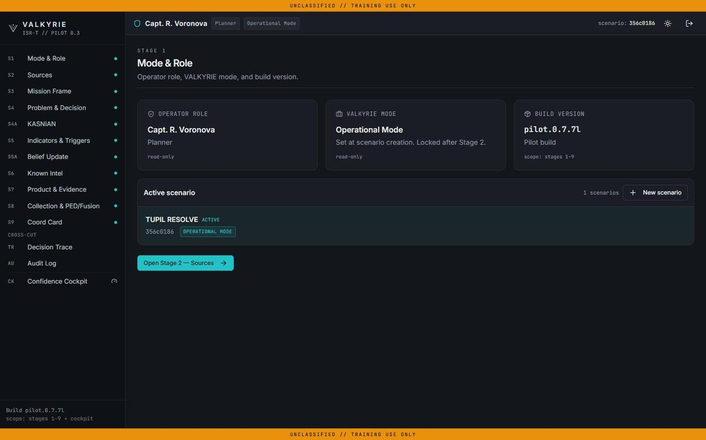
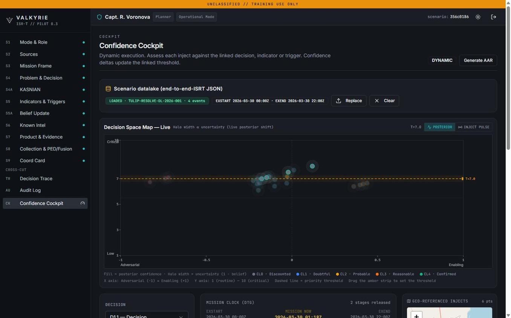
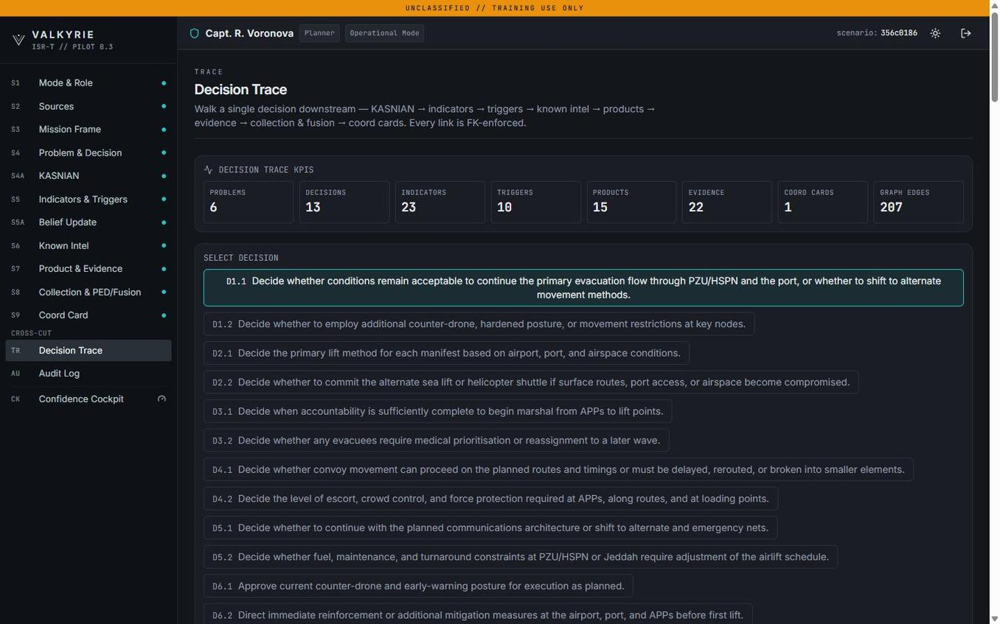
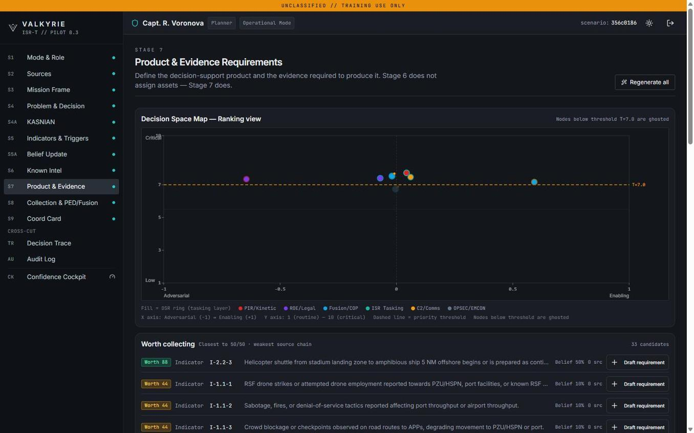
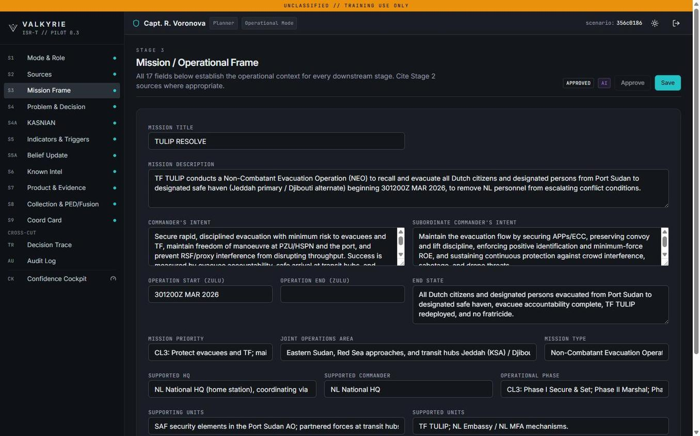
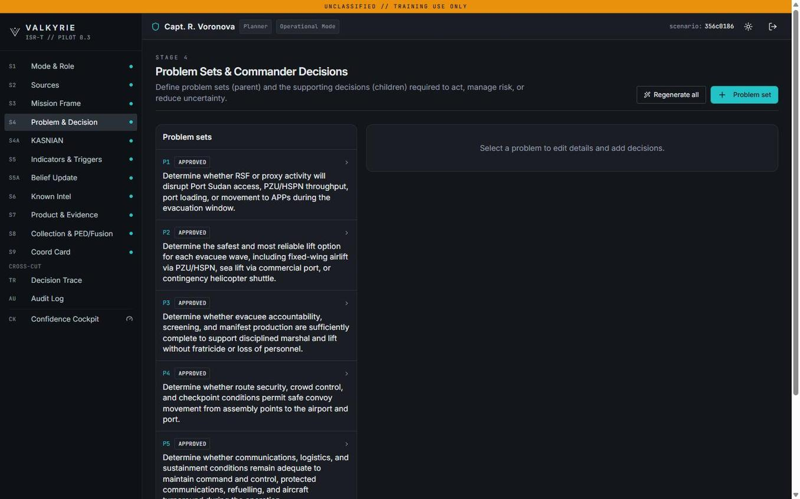
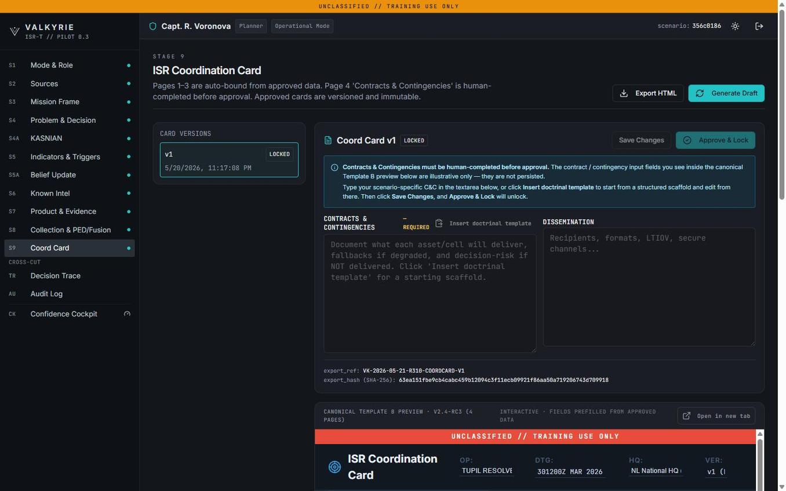
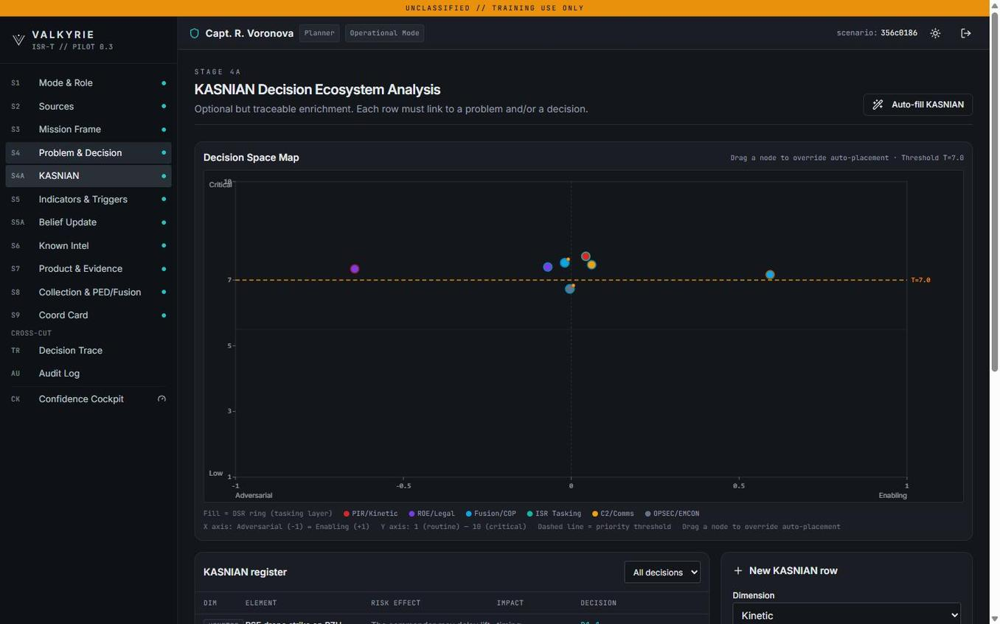
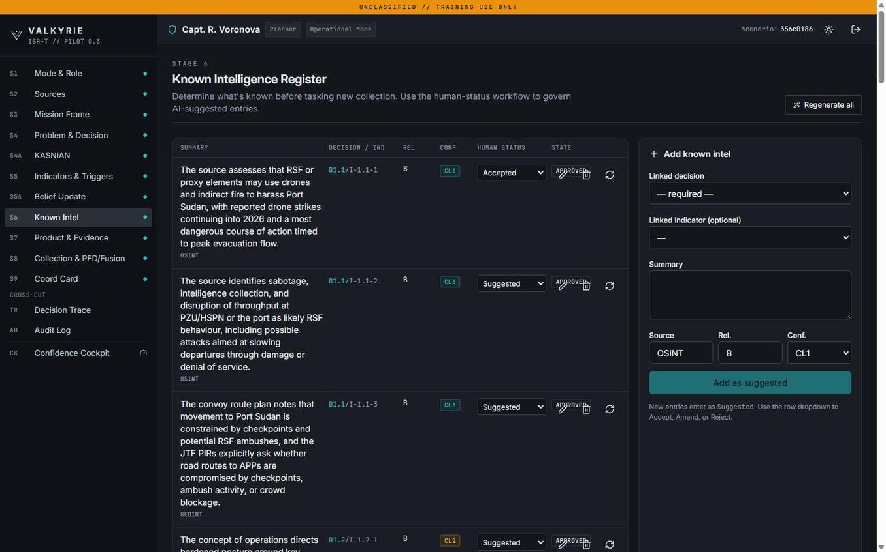

Mission Frame
Structured scenario-to-decision pipeline. Sets the named threshold decision, the LTIOV, the acceptable level of uncertainty, and the analytical chain that supports them.
VALKYRIE is the full ISR-T workflow platform built on the IDDI methodology. From Mission Frame to Coord Card, every step is foreign-key enforced and every output traces to a named commander decision. AI assists at the analytical preparation stages and never substitutes for the operator’s verdict.
Six product surfaces, designed to compose into a single decision-driven ISR-T workflow. Each surface stands alone for training; together they form the operational platform.
Structured scenario-to-decision pipeline. Sets the named threshold decision, the LTIOV, the acceptable level of uncertainty, and the analytical chain that supports them.
Actor and network analysis with the live Decision Space Map. Maps Key actors, Alliances, Structures, Norms, Interests, Attitudes and Networks inside a defined problem.
Foreign-key-enforced single-decision walk through the entire ISR chain. Every product traces to a named decision; every decision traces to a named owner.
Dynamic execution with belief-update and threshold management. Convergence states, confidence ladders, and operator overrides — under audit.
End-to-end ISRT JSON-driven coordination output. The downstream baseline that tasking and effects systems can consume directly.
Operational-mode AI assistance with doctrinal Human Gates. Pre-fills the mission frame, draft DSRs and convergence scoring — never the decision.
The platform entry point. Mode (Training / Operational) and role (Analyst / Cell Chief / Commander) determine which gates the operator must clear.

The live decision space, refreshed as new injects arrive. Convergence states, threshold flags and the operator’s confidence verdict, in one view.

The walk from a named commander decision down to the products and tasks that support it. Foreign-key enforcement at every step.

Each intelligence product carries the named DSR, the supporting evidence, and the convergence verdict it informed.

Scenario inputs are decomposed into the threshold problem and the analytical chain. AI pre-fill operates here under operator confirmation.

Threshold problem, decision family, decision owner, LTIOV. The skeleton the rest of the workflow hangs on.

The Stage 3 ISR Coordination Card. JSON-driven and downstream-consumable — the contract between VALKYRIE and the tasking systems it feeds.

The in-platform DSM, with the same Y=7.0 priority threshold and the same DSR colour ring as the public demonstrator on the AI-IDDI page.

AI assistance pre-fills indicators, attribution candidates and convergence scores. The analyst confirms, overrides or rejects each suggestion.

The fastest way to evaluate VALKYRIE is to see it run against a scenario you care about. Demos run 45-60 minutes; the trial environment is available immediately after.